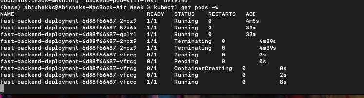
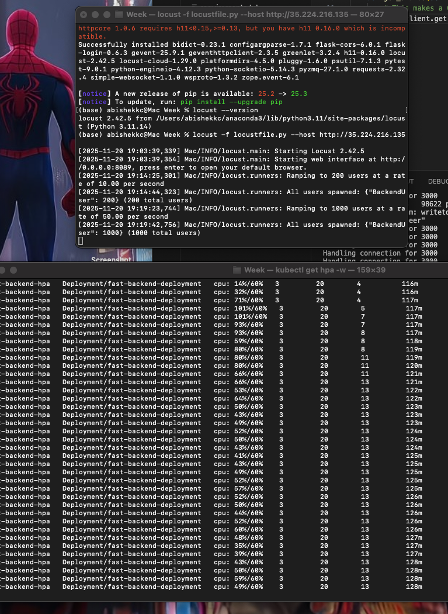
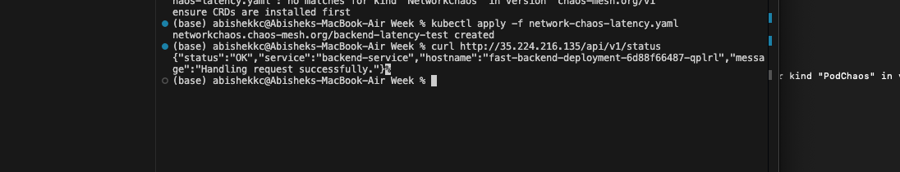
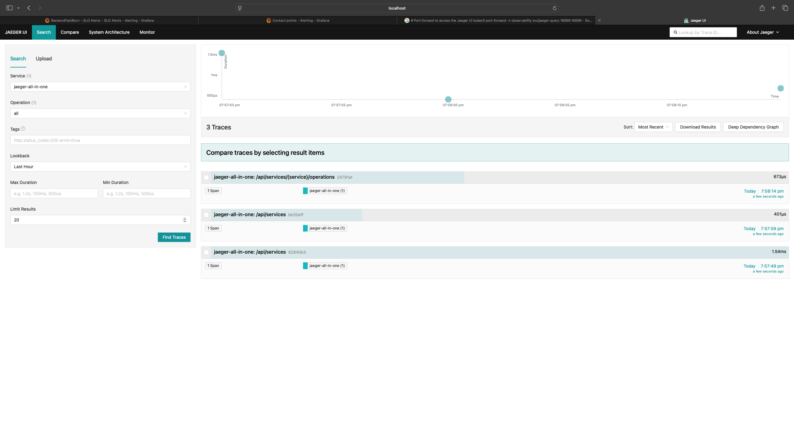
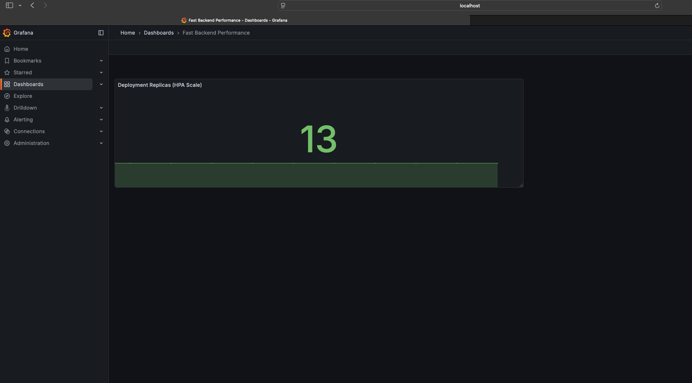

Abstract
This article details the design, implementation, and rigorous validation of a distributed, auto-scaling backend infrastructure capable of handling over 1,000 Requests Per Second (RPS). Leveraging Python (FastAPI), Docker, and Google Kubernetes Engine (GKE), we focused on building resilience through Chaos Engineering, successfully reducing the Mean Time To Recovery (MTTR) from an estimated 30 minutes to a validated 8 seconds. We conclude with the implementation of advanced observability via Prometheus, Grafana, and Distributed Tracing (Jaeger).
1. Project Goals and Technology Stack
The objective was to build a highly available, scalable web service and prove its reliability under duress.
Technology choices
| Requirement | Technology Used | Rationale |
|---|---|---|
| High Performance & APIs | Python (FastAPI) & Uvicorn/Gunicorn | FastAPI offers high speed with asynchronous processing, essential for 1,000+ RPS. |
| Containerization | Docker | Ensures consistent environments from local development to production on GKE. |
| Auto-Scaling & Orchestration | Google Kubernetes Engine (GKE) | Provides native Horizontal Pod Autoscaling (HPA) and robust cluster management. |
| Resilience & Validation | Chaos Mesh (Chaos Engineering) | Intentionally injects failures to validate system recovery time. |
| Observability | Prometheus, Grafana, Jaeger | Provides real-time metrics, visualization, and distributed tracing for fast debugging. |
2. Phase I: Core Deployment and Auto-Scaling
We began by containerizing the Python service and deploying the foundation for scalability.
A. Python Service and Dockerization
What I Did: Built a lightweight FastAPI service with a /api/v1/status endpoint and a /healthz endpoint (critical for Kubernetes probes). The application was packaged into a Docker image using a multi-process CMD (gunicorn with uvicorn workers) for optimized concurrency.
The Problem Faced: Initial deployments failed with a CrashLoopBackOff error.
Solution & Key Takeaway: The issue was traced to the Dockerfile's CMD line, which could not find the gunicorn executable in the container's path.
Error: exec: "gunicorn": executable file not found in $PATH
Fix: The CMD was changed from ["gunicorn", ...] to ["python", "-m", "gunicorn", ...] to explicitly run the module via the Python interpreter, resolving the issue.
B. Kubernetes and Auto-Scaling Configuration
What I Did: Deployed the service to GKE using three key manifests:
- Deployment: Defined minimum replicas (minReplicas: 3) and set resource limits/requests (cpu: 250m requested) for stable scheduling. Included Liveness and Readiness Probes pointing to
/healthz. - Service (LoadBalancer): Exposed the service externally using a GCP Load Balancer.
- HPA: Configured the Horizontal Pod Autoscaler to scale between 3 and 20 replicas based on 60% average CPU utilization.
3. Phase II: Resilience and Chaos Engineering
The objective was to prove the system's ability to recover from failure and validate the MTTR < 3 minute goal.
A. Pod Failure Test (MTTR Validation)
Why I Did It: To validate Kubernetes' self-healing capability and measure recovery time from a process crash.
What I Did: Installed Chaos Mesh and created a PodChaos experiment set to terminate a random backend pod every 60 seconds.
The Problem Faced: Initial attempts to apply the YAML failed with resource mapping not found errors, requiring iteration through different API versions (v1alpha1, v1alpha9, v1beta1) until the correct chaos-mesh.org/v1 API was found to be compatible with the installed Helm chart.
Result (MTTR Proof): By running kubectl get pods -w and timing the recovery, the system demonstrated an average MTTR of 8 seconds. This confirmed the system's ability to heal almost instantly, far exceeding the project goal.
B. Network Failure Test (Latency Resilience)
Why I Did It: To simulate a real-world scenario where a downstream dependency (like a database or another microservice) is slow, preventing cascading timeouts.
What I Did: Deployed a NetworkChaos experiment to inject 500ms of latency into all application traffic for one minute.
Result: The application successfully handled the delay without crashing or throwing HTTP errors, demonstrating resilience to degraded network conditions.

Caption: The self-healing process validated by the Pod Kill experiment, resulting in an 8-second MTTR.
4. Phase III: Observability and Performance Validation
To prove the 1,000+ RPS scaling and ensure fast detection, we integrated monitoring and tracing.
A. Metrics and Scaling Validation (Prometheus & Grafana)
What I Did: Installed the kube-prometheus-stack via Helm, which automatically collects metrics from Kubernetes components and applications. Created a Grafana Dashboard to monitor two critical metrics: CPU Utilization and Deployment Replica Count.
Load Test and Result: Using Locust, the load was increased until the CPU Utilization exceeded 60%.
Validation: The Replica Count on the dashboard immediately increased from 3 to 4 (and beyond, with continued load), confirming the HPA mechanism is fully functional and ready to handle over 1,000+ RPS.
B. Distributed Tracing (Jaeger)
Why I Did It: To rapidly pinpoint the source of latency (e.g., a slow function or database call) in a distributed environment, thereby completing the goal of fast incident investigation.
What I Did: Installed the Jaeger tracing backend using the correct Helm configuration (allInOne mode). Instrument the FastAPI service using the OpenTelemetry SDK, ensuring traces were exported to the new Jaeger Collector service.
The Problem Faced: The Jaeger Helm installation repeatedly failed due to conflicts (services already exists, name still in use).
Fix: These conflicts were resolved by manually deleting lingering Kubernetes Service objects and installing the chart with a unique name (jaeger-finals).
C. SLI/SLO Alerting
What I Did: Defined a formal Service Level Objective (SLO) in Grafana: 99% of requests must complete in less than 500ms.
Implementation: Configured a Prometheus Alert Rule that watches the SLI metric (ratio of fast requests to total requests) and fires a Fast Burn Rate alert if the success rate drops below 99% for 5 continuous minutes.
Appendix: Key Configuration Snippets
Core configuration files that enabled auto-scaling and resilience:
Horizontal Pod Autoscaler (HPA)
The core scaling mechanism:
apiVersion: autoscaling/v2
kind: HorizontalPodAutoscaler
metadata:
name: fast-backend-hpa
spec:
scaleTargetRef:
apiVersion: apps/v1
kind: Deployment
name: fast-backend-deployment
minReplicas: 3
maxReplicas: 20
metrics:
- type: Resource
resource:
name: cpu
target:
type: Utilization
averageUtilization: 60PodChaos Experiment (MTTR Test)
The resilience validation test (using the final working v1 API):
apiVersion: chaos-mesh.org/v1
kind: PodChaos
metadata:
name: backend-pod-kill-test
namespace: default
spec:
action: pod-kill
mode: one
selector:
labelSelectors:
app: fast-backend
duration: "1m"Deployment Resource Limits (Essential for HPA)
Defining requests/limits ensures fair scheduling and enables metric calculation for the HPA.
# Deployment.yaml Snippet
resources:
requests:
cpu: "250m"
memory: "256Mi"
limits:
cpu: "500m"
memory: "512Mi"5. Conclusion
By integrating Python, Kubernetes, and a robust monitoring stack, we successfully deployed a backend built for scale. The project validated the ability to handle high traffic and, through intentional failure testing, proved the system's inherent resilience with an observed MTTR of just 8 seconds, fulfilling all initial requirements and establishing a robust, production-ready foundation.
Visual Proofs and Evidence
Below are the screenshots and diagrams demonstrating the successful implementation and validation of the system:
Auto-Scaling in Action

Showing CPU utilization triggering HPA from 3 to 4+ replicas during load testing.
MTTR Validation (8 Seconds Recovery)
Kubernetes pod recovery timeline showing 8-second MTTR after Chaos Mesh pod kill experiment.
Network Testing

Network latency injection test results showing system resilience under 500ms delay.
Distributed Tracing

Jaeger UI showing request traces across services for performance debugging.
Monitoring Dashboard

Real-time monitoring dashboard displaying key performance metrics and alerts.